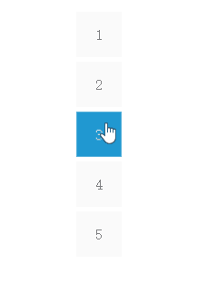

网页弹性按钮(纯css3) by zhou
Sun, Oct 25, 2015网页中弹性按钮设计(纯CSS)
效果如下： 
思路
其中包含2个动效，第一个是按钮中心的颜色扩散，第二个是按钮弹性收缩。
- 第一个颜色扩散：按钮分为了两层，第一层是按钮本身，第二层是按钮的为元素:before，注意按钮before是这个效果的重点，通过hover动作触发按钮before层的扩散。
- 第二个弹性收缩：需要使用@keyframes设计动画的效果。
两个动画独立完成后，重叠在一起的话，需要调整动画的时间及效果。
代码分析
html
<div class="bottle">
<a class="hvr-rectangle-out hvr-pop" href="javascript:void(0)">1</a>
</div>
<div class="bottle">
<a class="hvr-rectangle-out hvr-pop" href="javascript:void(0)">2</a>
</div>
<div class="bottle">
<a class="hvr-rectangle-out hvr-pop" href="javascript:void(0)">3</a>
</div>
<div class="bottle">
<a class="hvr-rectangle-out hvr-pop" href="javascript:void(0)">4</a>
</div>
<div class="bottle">
<a class="hvr-rectangle-out hvr-pop" href="javascript:void(0)">5</a>
</div>
css
/*按钮基础样式*/
.bottle {
display: block;
width: 50px;
height: 50px;
margin-bottom: 5px;
}
.bottle a {
text-decoration: none;
color: gray;
}
/*颜色扩散动效部分*/
.hvr-rectangle-out {
display: inline-block;
vertical-align: middle;
transform: translateZ(0);
box-shadow: 0 0 1px rgba(0, 0, 0, 0);
backface-visibility: hidden;
position: relative;
background-color: #fafafa;
transition-property: color;
transition-duration: 0.3s;
}
/*:before这个是颜色扩散动效的重点*/
.hvr-rectangle-out:before {
content: "";
position: absolute;
z-index: -1;
top: 0;
left: 0;
right: 0;
bottom: 0;
transform: scale(0.5);
transition-property: transform;
transition-duration: 0.2s;
transition-timing-function: ease-out;
}
.hvr-rectangle-out:hover,
.hvr-rectangle-out:focus,
.hvr-rectangle-out:active {
color: white; /*颜色扩散时候，字体改变颜色*/
}
.hvr-rectangle-out:hover:before,
.hvr-rectangle-out:focus:before,
.hvr-rectangle-out:active:before {
background: #2098d1;
transform: scale(1); /*hover触发:before层的扩散*/
}
/*弹性收缩动效部分*/
/*使用keyframes定义弹性动画
1是原来的比例扩散到1.05倍的比例，再缩回1倍原来的比例*/
@keyframes hvr-pop {
25% {
-webkit-transform: scale(1);
transform: scale(1);
}
50% {
-webkit-transform: scale(1);
transform: scale(1);
}
75% {
-webkit-transform: scale(1.05);
transform: scale(1.05);
}
100% {
-webkit-transform: scale(1);
transform: scale(1);
}
}
.hvr-pop {
display: inline-block;
vertical-align: middle;
transform: translateZ(0);
box-shadow: 0 0 1px rgba(0, 0, 0, 0);
backface-visibility: hidden;
width: 50px;
height: 50px;
text-align: center;
line-height: 50px;
}
.hvr-pop:hover, .hvr-pop:focus, .hvr-pop:active {
animation-name: hvr-pop;
animation-duration: 0.3s;
animation-timing-function: linear;
animation-iteration-count: 1;
}